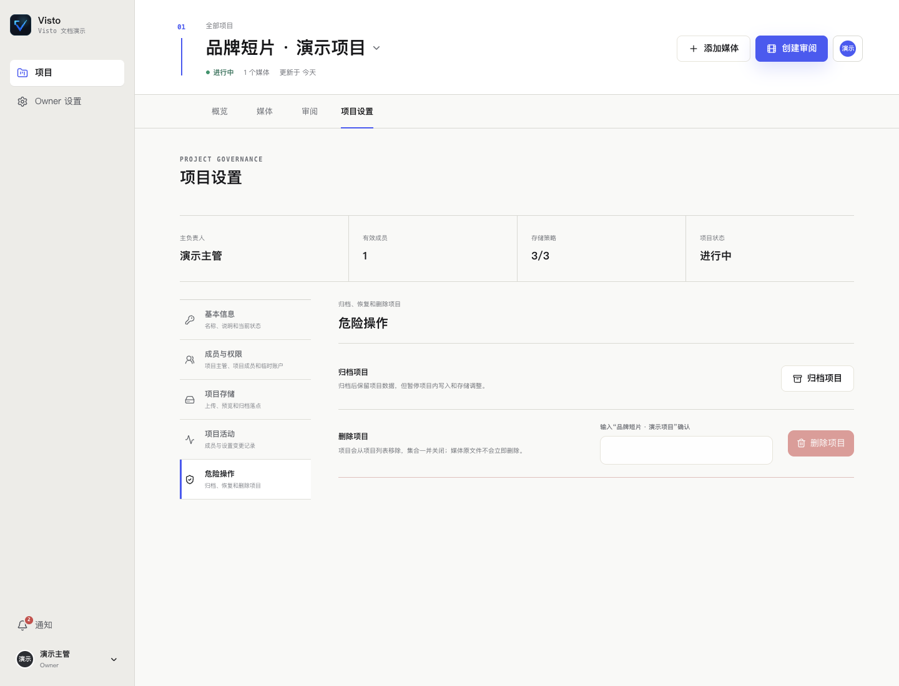

文档中心/项目与素材
VISTO USER GUIDE / 15
回收站、归档与删除
用户手册2026-10-03Server 浏览器工作台
这些操作的影响不同。执行前先确认你要解决的是“从当前项目移除素材”“停止协作”还是“彻底删除项目”。
| 操作 | 作用 | 能否代替备份 |
|---|---|---|
| 从当前项目移除媒体 | 从当前项目关系中移除，可在项目回收站恢复 | 不能 |
| 恢复回收站媒体 | 把被移除的媒体重新加入当前项目 | 不能 |
| 归档项目 | 保留项目数据，暂停项目内写入和存储调整 | 不能 |
| 恢复项目 | 把已归档项目恢复为进行中 | 不能 |
| 删除项目 | 按确认说明处理项目，可能不可恢复 | 必须先有独立备份 |
恢复误移除媒体
进入项目“媒体 → 回收站”，找到相应媒体，使用恢复操作并查看提示。回到项目媒体确认文件和版本可读。若底层原文件已经被外部删除，恢复项目关系不会凭空恢复文件。
项目交付后的归档


- 确认最终版本、正式结论和交付内容。
- 检查未解决反馈，记录保留原因。
- 检查外部分享，需要停止访问的先撤销。
- 确认实际备份和必要的媒体异盘副本。
- 进入 项目设置 → 危险操作，选择归档并确认。
归档不会自动把素材复制到归档存储，不会自动做异地备份，也不应假定已经撤销所有分享。需要再次修改时先恢复项目，再重新审阅新版本。
删除前必须确认的内容
读清页面对删除范围和可恢复性的提示，核对项目名、版本、分享及备份。不能用项目回收站替代整库恢复。备份恢复通常会影响整个实例，不只是一个项目，请让维护者评估后处理。